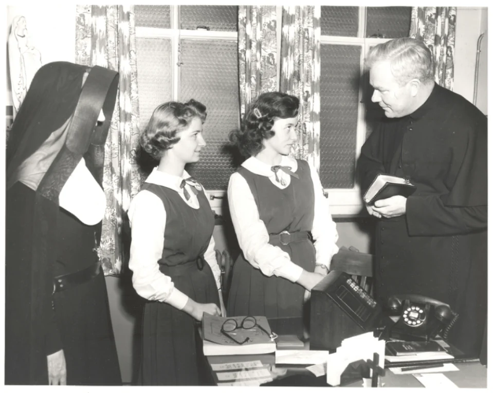
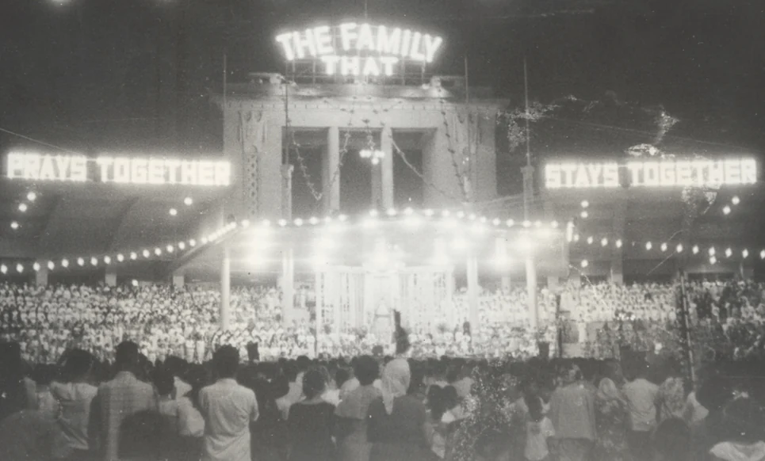

Una famiglia. Un mondo in preghiera.
Prima delle folle, delle telecamere e delle trasmissioni radio, c’era una famiglia che pregava il Rosario a casa.
Questa è la storia del venerabile Patrick Peyton e un invito che continua a rivolgersi a ogni famiglia.
Tutto è cominciato a casa.
Patrick Peyton crebbe in una fattoria della contea di Mayo, in Irlanda, in una famiglia di nove figli. Ogni sera suo padre John guidava la famiglia nel Rosario. Sua madre Mary e i nonni gli trasmisero la fede che segnò la sua infanzia.
Pregavano insieme. Anni dopo, quell’esperienza sarebbe diventata il cuore della sua missione.

Un sacerdote con la preghiera di famiglia nel cuore.
Patrick came to America with his brother Tom. In Scranton, Pennsylvania, work at the cathedral helped reawaken his desire to become a priest. Both brothers entered the Congregation of Holy Cross.
In 1938, tuberculosis threatened his vocation. Patrick prayed to Mary during his illness and attributed his recovery to her intercession. That experience deepened his resolve to share the prayer that had shaped his family.
On June 15, 1941, they were ordained at Notre Dame. Father Patrick’s first assignment took him to Albany, New York. There, he began asking others to help bring the Rosary into family homes.
Read the ministry’s account of his early vocation
1942 · The invitation begins to travel.
Students helped prepare letters to bishops. A mission that had begun around one family’s prayer was finding its way to other homes.

Il messaggio trovò un microfono. Poi una telecamera.
On May 13, 1945, a national radio broadcast brought Father Peyton’s invitation to American families. Bing Crosby joined the program. Father Peyton asked listeners to pray the Rosary together for peace.
Family Theater Productions followed in 1947. Radio dramas, television and film gave him new ways to carry the same message. The Life of Christ films, completed in 1958, brought the mysteries of the Rosary to the screen.
The medium changed. The invitation remained: pray together.


«La famiglia che prega unita resta unita».
Il venerabile Patrick Peyton
Un invito che ha attraversato il mondo.
From letters and broadcasts to Rosary rallies, Father Peyton brought family prayer into public life. The ministry’s archive records gatherings in New Orleans, Manila, Barcelona and Mérida.
The scale was extraordinary. The invitation was still personal: bring prayer home to your own family.
1959 · Manila, Philippines

Il prossimo capitolo può cominciare con la tua famiglia.
Family Rosary continues Father Peyton’s mission: helping families discover and grow in shared prayer. That means serving families who pray every day, families who have never prayed together, and families wondering where to begin.
A parent learning to lead a decade. Children discovering the mysteries. A family making room for a few quiet moments. The resources here are made to help you take that next step together.
Impara a pregare il Rosario · Trova aiuto per pregare in famiglia

Molte mani. Un invito.
In Novaliches, Philippines, young people and adults prepare Rosaries together around a table. At The Father Peyton Center, families gather for prayer and community. These shared tasks carry Father Peyton’s mission from one family to the next.